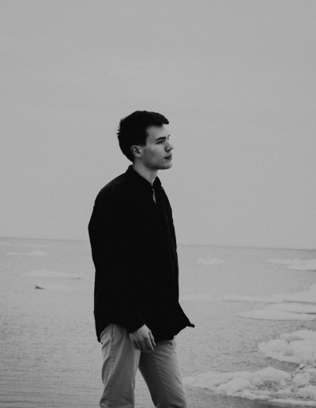
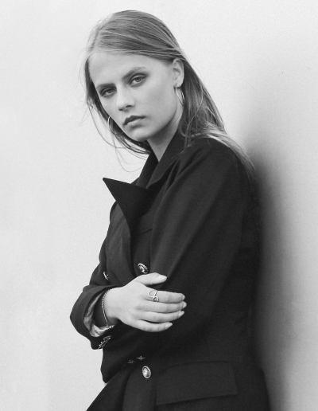
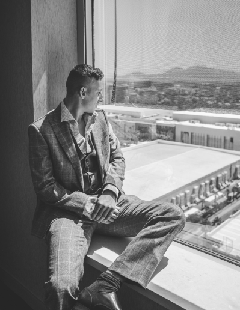
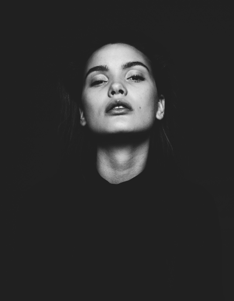
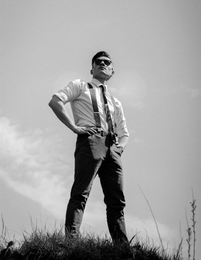
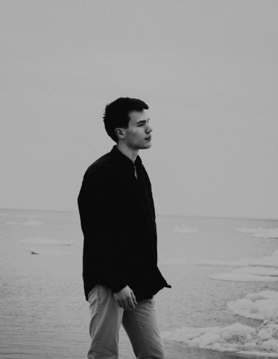
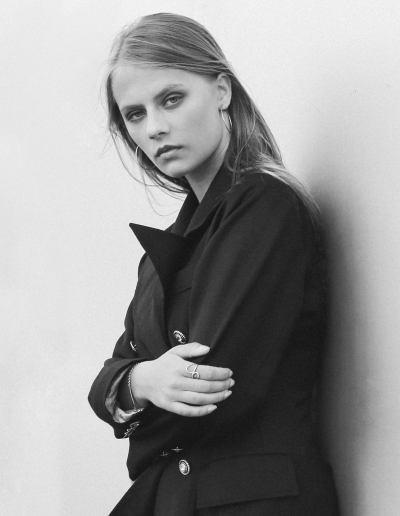
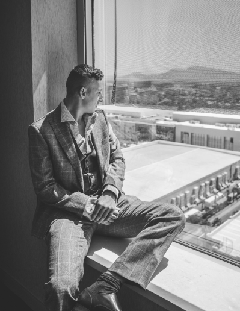
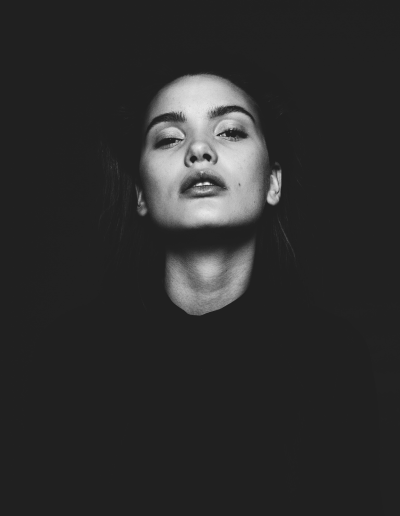
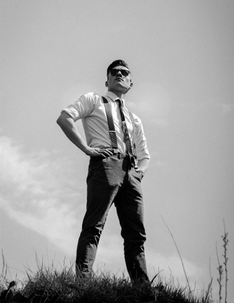

About Me
Paul Amusan is a young, energetic, and talented fashion designer who focuses on his men’s clothing line,
Paul Amusan. His work draws inspiration from local Nigerian fabrics coupled with Japanese tailoring
designs. His designs are masculine, yet modern and trendy by way of transforming an ordinary look into
a sophisticated design that embraces elegance.
I began acquired his love for fashion when he was a young boy where he spent his time sketching and
drawing. He loves to work with colors, and his awesome talent has seen his pieces worn by famous
politicians and celebrities. Young and successful, he is a talented fashion designer to watch out for as his
name continues to cause ripples in both the local and global fashion industries.
While in New York, I was employed in the Charivari Boutique where president of the company, Barbara
Weiser, noticed my potential and passion for unique fashion and helped me launch my first fashion
collection. My passion for African fashion is profound. “Everything begins for me with the print and
fabric, which usually has some shine,” exclaims Faturoti. My deep African roots, as well as extensive
global experience with having lived and worked in New York and Milan have been instrumental in her
success and international spotlight.
My pieces are also sold globally in the UK, US, and France. Anthony uses his talent to make an impact on
the community through a mentoring program he runs that helps young and upcoming Nigerian
designers excel and compete on a global platform. Nature, colors, and artwork are his main sources of
inspiration.


 








